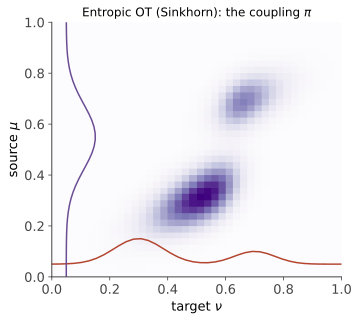

本页目录
最优传输 III · Sinkhorn 与生成模型
对标：Peyré & Cuturi COT §4、§9 ｜ 前置：ot-01/02、信息论（KL）、cvx-01 OT 的计算革命：离散 OT 的通用线性规划求解会随网格规模迅速变重，熵正则化把问题变成"矩阵缩放"——Sinkhorn 算法每步主要做矩阵-向量乘与逐元素除法，GPU 友好，把 OT 从理论请进了机器学习的日常。收官对账两大生成模型（WGAN、流匹配）。
学习层：三行三列的“搬货对账”
1. 具体谜题：既要走便宜的路，又要把账对平
把源分布 \(a=(0.5,0.3,0.2)\) 想成三个仓库，把目标分布 \(b=(0.2,0.3,0.5)\) 想成三个商店。运输成本固定为
我们要填一个非负矩阵 \(\pi\)：第 \(i\) 行从源 \(i\) 发出的货必须合计为 \(a_i\)，第 \(j\) 列送到目标 \(j\) 的货必须合计为 \(b_j\)，同时尽量少走成本为 4 的远路。难点在于：你把一行放大来补足源边缘时，列账又会被打乱。
2. 先做预测：ε 小和 ε 大会画出什么图？
先猜再操作：\(\varepsilon\) 很小时，质量是否会集中在对角线和相邻低成本格子？\(\varepsilon\) 变大时，热图是否变得平滑，甚至接近独立耦合 \(a\otimes b\)？再按一次“单步迭代”，观察为什么刚对好的行和在下一次列缩放后会轻微漂移。
3. 最小模型：两次缩放就是一个完整迭代
取 \(\varepsilon>0\)，令
当 \(a_i,b_j>0\) 且 \(\sum_i a_i=\sum_j b_j\) 时，\(K\) 严格为正；Sinkhorn 的一个完整迭代依次执行
第一步让行边缘对齐，第二步让列边缘对齐；第二步可能让行边缘稍微偏离，所以要反复交替。交互中的“边缘误差”是当前 \(\pi\) 的所有行和、列和与 \(a,b\) 的最大绝对差，而不是只看某一行。
4. 反例与边界：缩放不是无条件的魔法
只做一次行归一化不能保证列和正确；独立地把每一行、每一列都除以一个数也会互相干扰，交替缩放才把约束逐步拉回同一张表。\(\varepsilon\) 也不是“越小越好”：它趋于 0 时，正则化解趋向一个精确 OT 最优解（若精确解不唯一，熵项会选择其中的特定解），但 \(K\) 的元素比会变得极端，带来收敛变慢和浮点下溢；\(\varepsilon\) 很大时则更接近平滑的独立耦合，几何成本被熵偏好部分掩盖。若边缘有零质量或总质量不相等，上面的正性与可行性条件也必须先处理。
5. 迁移提示：换成本，先说出结构再算
给一个新的 \(3\times3\) 成本矩阵，先不计算 \(u,v\)：指出最便宜的格子，预测小 \(\varepsilon\) 热图的亮区；再预测大 \(\varepsilon\) 时哪些非零格子会被熵项保留下来。最后用“行缩放 → 列缩放 → 重新检查两种边缘”的三句日志解释一次迭代，这比只报出一个最终矩阵更能说明算法为何工作。
无 JavaScript 时的静态读法：实验固定使用上述 \(C\)、\(a=(0.5,0.3,0.2)\)、\(b=(0.2,0.3,0.5)\)。手算时从 \(u=v=(1,1,1)\) 开始，一次完整迭代先用 \(u_i=a_i/(Kv)_i\) 缩放行，再用 \(v_j=b_j/(K^\top u)_j\) 缩放列；脚本加载后可调 ε、逐步或自动迭代，并查看耦合热图、行列和与最大边缘误差。
1. 熵正则化
离散 OT（成本阵 \(C\)、边缘 \(a, b\)）加熵罚：
三重效果：目标严格凸（解唯一）；解的结构变为
【证明】 拉格朗日对边缘约束求驻点：\(\ln\pi_{ij} = \frac{-C_{ij} + \alpha_i + \beta_j}{\varepsilon}\)——指数化即得（最大熵/指数族的结构再现：信息论 III 的拉格朗日推导逐字重演——熵正则把 OT 拉进了指数族的世界）。\(\blacksquare\) 第三重：\(\varepsilon \to 0\) 时，正则化解趋向精确 OT 的一个最优解（精确解不唯一时并非任意指定的那一个）；\(\varepsilon\to\infty\) 时趋向固定边缘下的最大熵耦合 \(a\otimes b\)——\(\varepsilon\) 是"几何 vs 模糊"的旋钮。
2. Sinkhorn 算法及其收敛

结构 \(\pi = \mathrm{diag}(u)K\mathrm{diag}(v)\) 下边缘约束变成交替可解：
——交替满足两个边缘（Gauss–Seidel 气质，cvx-03 的轮流坐庄第三次出现）。每个完整迭代包含两次矩阵-向量乘和逐元素除法：\(O(n^2)\)、可批量、GPU 友好；一次行缩放并不会永久保持行边缘，因为随后还要做列缩放。
定理（几何收敛）【骨架】 当 \(\varepsilon>0\)、\(K\) 严格为正、两边缘严格为正且总质量相等时，Sinkhorn 迭代在 Hilbert 投影度量（正锥上的射影距离 \(d_H(x,y) = \ln\max_{i,j}\frac{x_iy_j}{x_jy_i}\)）下是压缩映射：正矩阵 \(K\) 的作用压缩系数可写成 \(\lambda(K) = \frac{\sqrt{\eta}-1}{\sqrt\eta+1} < 1\)（\(\eta\) 由 \(K\) 的交叉比决定）⇒ 几何收敛。\(\blacksquare\) （又是压缩映像——泛函 I 的定理第六次收租；且此证明与 Perron–Frobenius 的 Birkhoff 证法同源【引用】：正性 + 射影度量——ma-03 的正矩阵理论与 Sinkhorn 是一家人。\(\varepsilon\) 小时 \(K\) 元素比爆炸、收敛变慢 + 数值下溢——log 域实现（log-sum-exp，数值 I 的技巧）是工程标配。）
统计红利【有条件的结论】：在相应的正则化估计框架、样本假设和 \(\varepsilon\) 选择下，熵正则化可把经验 OT 的维数依赖改善到 \(n^{-1/2}\) 级；这不是对所有估计目标和所有 \(\varepsilon\) 的无条件保证。代价是正则化偏差，需要用 Sinkhorn 散度（去偏版）等方法修正。
3. 生成模型对账（两大主角）
WGAN：训练生成器最小化 \(W_1(\mu_{\text{data}}, \mu_G)\)，判别器实现 K–R 对偶（ot-01）的 Lipschitz 检验函数 \(\sup_{\mathrm{Lip}\leq1} E_{\text{data}}f - E_Gf\)——权重裁剪/梯度惩罚 = Lipschitz 约束的工程实现。为什么救了 GAN：JS/KL 在支撑不交时梯度归零（ot-01 例 3），\(W_1\) 处处给出有意义的"距离方向"——度量的选择就是梯度的存亡。
流匹配 / 扩散的 OT 视角（comfy 课 02/03 与 sde-02 的第三次对账）：概率流 ODE 沿途的分布路径可与 McCann 插值（ot-02）对齐——Rectified Flow 的"直线路径"恰是"逐点直线搬运"的 OT 理想（训练时用独立耦合、reflow 迭代逼近最优耦合【引用 Liu et al.】）；Schrödinger 桥 = 熵正则 OT 的动态版（Sinkhorn 的连续时间亲戚【引用】）——扩散模型家族与 OT 的血缘正在成为生成模型理论的主干道。
其余落地速览：领域自适应（对齐源/目标特征分布）、词嵌入对齐（跨语言词典归纳）、单细胞轨迹（细胞分布随时间的 OT 插值）、分布鲁棒优化（Wasserstein 球内最坏情形——优化线的现代分支）。
4. 最优传输三页收官
| 页 | 资产 | 一句话 |
|---|---|---|
| I | Kantorovich 松弛 + 对偶 | 耦合替映射；\(W_1\) = Lipschitz 检验 |
| II | Brenier + 测地线/重心 | 最优映射 = 凸梯度；分布空间成几何 |
| III | 熵正则 + Sinkhorn | 矩阵缩放 + 压缩映像；GPU 上的 OT |
KL（信息论线）与 \(W\)（本线）两把"分布尺子"的分工至此清楚：KL 论"信息"、W 论"几何"——检验用 KL 家族（Stein/Sanov 计价），生成与插值用 W 家族（梯度存活、形状语义）。
5. 练习与要点
例 1（Sinkhorn 手转三轮） \(3\times3\) 小例（自设 \(C\)、均匀边缘、\(\varepsilon = 1\)）：手算 \(u, v\) 交替三轮，看行列和逼近目标边缘——矩阵缩放的体感；再把 \(\varepsilon\) 减小十倍观察收敛变慢（压缩系数恶化的实证）。
例 2（对偶检验函数的形状） 一维 \(\mu = \delta_{-1}, \nu = \delta_1\)：最优 Lipschitz 函数 \(f(x) = x\)（斜率打满）——WGAN 判别器"在两分布间拉出最陡坡"的最小画像；支撑重叠处坡度自动放缓——梯度信息的温和性可视化。
例 3（选尺子练习） 三个任务选 KL 还是 W：(a) 检验模型输出分布是否漂移（KL/Stein——要灵敏度与检验理论）；(b) 把画风 A 渐变到画风 B（W——要测地线语义）；(c) 比较两个 LLM 的 next-token 分布（KL——同支撑、信息语义）。"什么问题用什么几何"是本课程最后的判断力。\(\blacksquare\)
信息与传输线六页完卷。收官冲刺：几何与代数线——流形几何（4）、代数拓扑（3）、代数进阶（3）。